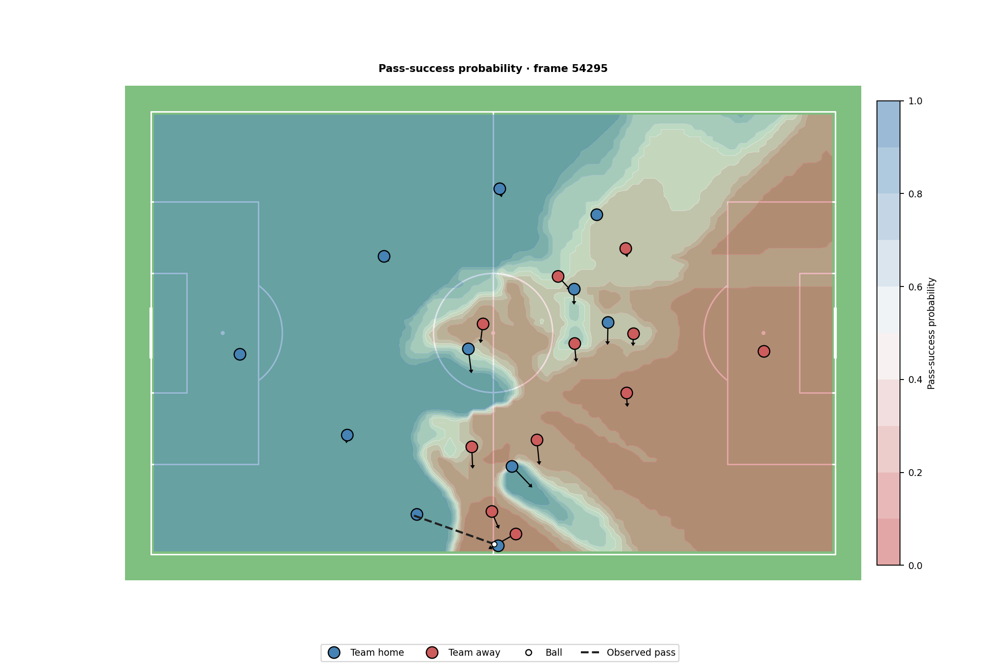

from pathlib import Path
import os
import matplotlib.pyplot as plt
from PRESS import PRESS
opendata = Path(os.environ.get("SKILLCORNER_OPENDATA", Path.cwd().parent / "opendata"))
match_dir = opendata / "data/matches/1925299"
press = PRESS.from_skillcorner(match_dir)
frame_id = 54295
from PRESS.visualization import plot_pass_map
press.compute_ppcf(frame_id)
plot_pass_map(press, frame_id, field="pass_success", pass_target=(-12.15, -28.05))
plt.savefig("figures/vignette_02_pass_real_field.png", dpi=170)
plt.savefig("figures/vignette_02_pass_real_field.svg")
plt.close()Pass probability
1. Motivation and model overview
The pass probability component estimates the probability that the attacking team completes a pass to a candidate destination. It supplies the pass-success component of PRESS; its complement is the pass-failure probability. Destination choice is modelled separately.
The formulation follows two related contributions by Spearman. Physics-Based Modeling of Pass Probabilities in Soccer develops a physics-based pass model in which player interception times, uncertainty in arrival and competing control determine completion probabilities, with parameters estimated from observed passes (Spearman et al. 2017). Beyond Expected Goals extends the use of probabilistic player control to potential pitch control and hypothetical ball delivery (Spearman 2018).
PRESS implements two uses of the same physical control mechanism. First, it evaluates the competition for control along reconstructed trajectories of observed passes and estimates the control rate \(\lambda_{\mathrm{control}}\) and arrival dispersion \(s\) by maximum likelihood. Second, it generates hypothetical ball flights to candidate destinations and evaluates a potential pitch control field (PPCF) by initiating competition for control at the destination only after the selected flight time. Player reachability, however, is measured from ball release throughout. Because the second calculation differs from the trajectory-based fitting task, a subsequent isotonic calibration maps raw PPCF scores to observed pass-completion frequencies. Calibration leaves the fitted physical parameters unchanged.
The distinction is methodological. An observed trajectory specifies a sequence of possible interception locations, whereas a hypothetical destination defines a single location and a selected delivery time. Consequently, the two calculations can produce different scores even with identical player states and identical physical parameters. The observed-trajectory model supplies the estimation likelihood; the endpoint model supplies the raw score used for deployed destination-level inference.
The model is physics-informed: ball flight and player motion use explicit approximations, while control intensity and arrival uncertainty are learned from observed outcomes. The passer is excluded from the eligible receiving and competing control populations.
2. Player motion and interception time
Travel and turning time
Let \(\mathbf p_j\) and \(\mathbf v_j\) be the observed position and velocity of player \(j\), and let \(\mathbf r\) be a candidate interception position. Define \(d_j(\mathbf r)=\|\mathbf r-\mathbf p_j\|\) and \(u_j=\|\mathbf v_j\|\). Following the arrival-time modelling approach of Spearman (Spearman et al. 2017; Spearman 2018), PRESS approximates motion as a turning delay followed by linear acceleration and, if needed, travel at constant effective speed.
For \(u_j\le v_{\max}\), with linear acceleration \(a\), define
\[ t_{a,j}=\max\left\{\frac{v_{\max}-u_j}{a},0\right\}, \qquad d_{a,j}=u_jt_{a,j}+\frac12at_{a,j}^2. \]
The estimated movement time is
\[ t_{\mathrm{move},j}(\mathbf r)= \begin{cases} \dfrac{\sqrt{u_j^2+2ad_j(\mathbf r)}-u_j}{a}, &d_j(\mathbf r)\le d_{a,j},\\[6pt] t_{a,j}+\dfrac{d_j(\mathbf r)-d_{a,j}}{v_{\max}}, &d_j(\mathbf r)>d_{a,j}. \end{cases} \]
If the observed initial speed exceeds \(v_{\max}\), the implementation retains that speed without further acceleration and sets \(t_{\mathrm{move},j}=d_j/u_j\). Thus \(v_{\max}\) is an effective acceleration target.
Following Pleuler’s heading-dependent turning penalty (Pleuler 2020), let \(\theta_j(\mathbf r)\) be the angle between the player’s current velocity and the target direction. PRESS adds
\[ t_{\mathrm{turn},j}(\mathbf r)=\frac{u_j\theta_j(\mathbf r)}{a_{\mathrm{turn}}}. \]
This follows from the geometric turning radius \(R=u_j^2/a_{\mathrm{turn}}\) and arc traversal time \(R\theta_j/u_j\). It is a delay approximation of the turning manoeuvre. At rest, the turning term vanishes. The total arrival time is
\[ \boxed{\tau_j(\mathbf r)=t_{\mathrm{move},j}(\mathbf r)+t_{\mathrm{turn},j}(\mathbf r).} \]
3. Probabilistic player reachability
As in Spearman’s pitch-control model, uncertainty around the estimated arrival time is represented by a logistic distribution (Spearman et al. 2017). At time \(t\), the reachability of player \(j\) at position \(\mathbf r\) is
\[ \boxed{ F_j(t,\mathbf r)= \left[1+\exp\left\{-\frac{\pi[t-\tau_j(\mathbf r)]}{\sqrt3\,s}\right\}\right]^{-1}. } \]
Here \(s>0\) is the standard deviation of logistic arrival-time uncertainty; its logistic scale parameter is \(\sqrt3s/\pi\). Reachability equals \(0.5\) at \(t=\tau_j(\mathbf r)\). It is a player-specific arrival gate, and each \(F_j\) ranges over \([0,1]\) independently of the other players.
Motion parameters
The model uses \(v_{\max}=5.5\) m/s and \(a=a_{\mathrm{turn}}=7\) m/s\(^2\). These are effective common movement capabilities, motivated by published player-motion models and checked against the tracking distribution.
| Parameter | Literature rationale | Tracking consistency check |
|---|---|---|
| Player speed \(v_{\max}=5.5\) m/s | The speed scale is informed by Spearman’s player-motion framework (Spearman 2018). | Off-ball player-frame speeds \(>2\) m/s: Q95 = 5.745 m/s (or 5.656 m/s excluding annotated ball-carrier frames). |
| Linear acceleration \(a=7\) m/s\(^2\) | The acceleration scale used in Spearman’s movement model (Spearman 2018). | Off-ball acceleration magnitudes \(>3\) m/s\(^2\): Q99 = 7.013 m/s\(^2\). |
| Turning acceleration \(a_{\mathrm{turn}}=7\) m/s\(^2\) | PRESS sets the turning-delay scale equal to the linear-acceleration parameter. | This equality is a modelling convention that sets the turning parameter from the linear-acceleration value. |
The speed filter excludes stationary and walking observations for this descriptive check. These conditional quantiles assess the consistency of rounded model scales with observed movement. Observed positions and velocities are the movement inputs of the model.
5. Pass probability model: observed trajectories
The first model assigns a completion probability to an observed pass. The ball is reconstructed as a moving three-dimensional trajectory, and every eligible player competes to intercept it at successive positions along its path.
Reconstructing the observed ball trajectory
For parameter estimation, PRESS reconstructs each observed pass from its measured release position and initial ball observations. Launch speed and direction are estimated from the early observed ball positions, with release position fixed. The annotated target is not imposed as an endpoint constraint. The benchmark documents the initial-condition estimators and their selection.
The fitted initial conditions are propagated through the flight model to obtain \(\mathbf R_k(t)\) for observed pass \(k\). This reconstruction is an offline estimation procedure: it can use observations after release and is not presented as an online forecast available at the release instant.
For each reconstructed pass, the ball follows a time-indexed sequence of horizontal positions and heights. At every time step, each player’s arrival gate is evaluated at the ball’s current horizontal location. Thus a defender can contribute control probability at an intermediate point, before the ball reaches its annotated destination. The observed binary outcome is used only after these time-dependent contributions have been combined into a team-level completion probability.
Control along the moving trajectory
Let \(\mathbf r_k(t)=\mathbf R_{k,xy}(t)\) and \(z_k(t)=R_{k,z}(t)\) denote the horizontal location and height of the reconstructed ball for pass \(k\). Define \(P_{jk}^{\mathrm{traj}}(t)\) as the probability that player \(j\) has obtained first control by time \(t\), and
\[ U_k^{\mathrm{traj}}(t)=1-\sum_j P_{jk}^{\mathrm{traj}}(t) \]
as the probability that nobody has yet obtained control. A player contributes only when the ball is at controllable height (at most 2 m). The instantaneous control intensity is
\[ h_{jk}^{\mathrm{traj}}(t)=\lambda_{\mathrm{control}} F_j(t,\mathbf r_k(t))\,\mathbb 1\{z_k(t)\le 2\,\mathrm m\}. \]
The coupled competition equations are
\[ \boxed{\frac{dP_{jk}^{\mathrm{traj}}(t)}{dt}=U_k^{\mathrm{traj}}(t)h_{jk}^{\mathrm{traj}}(t),\qquad P_{jk}^{\mathrm{traj}}(0)=0.} \]
Equivalently, writing \(H_k^{\mathrm{traj}}(t)=\sum_j h_{jk}^{\mathrm{traj}}(t)\),
\[ U_k^{\mathrm{traj}}(t)=\exp\!\left[-\int_0^t H_k^{\mathrm{traj}}(u)\,du\right], \qquad P_{jk}^{\mathrm{traj}}(T_{\max})=\int_0^{T_{\max}} U_k^{\mathrm{traj}}(t)h_{jk}^{\mathrm{traj}}(t)\,dt. \]
The horizon \(T_{\max}\) is a time large enough for the ball to be controlled by someone; formally, \(T_{\max}\to\infty\).
The model’s observed-pass completion probability is the total first-control probability of eligible attacking teammates \(\mathcal A_k\) (excluding the passer):
\[ \boxed{p_k^{\mathrm{traj}}(\lambda_{\mathrm{control}},s)=\sum_{j\in\mathcal A_k}P_{jk}^{\mathrm{traj}}(T_{\max}).} \]
Because the target position changes with \(t\), the model accounts for interception opportunities before the ball reaches its intended destination. The resulting \(p_k^{\mathrm{traj}}\) is the quantity subsequently used in the Bernoulli likelihood.
6. Pitch control model: hypothetical destinations
The second model evaluates the probability that the attacking team would obtain first control at a chosen destination \(\mathbf r\). It constructs a hypothetical ball delivery and uses its arrival time to determine when competition at that fixed target may begin.
Selecting a hypothetical ball flight
For inference, PRESS chooses a feasible hypothetical flight to destination \(\mathbf r\). It evaluates a grid of 900 launch combinations: 30 speeds between 5 and 25 m/s and 30 elevation angles between 0 and 45 degrees. Among flights reaching the destination at controllable height, it selects the ball-arrival time closest to the estimated arrival time of the eligible teammate nearest in initial position to \(\mathbf r\).
This receiver-friendly timing convention follows the potential-pitch-control construction of Beyond Expected Goals, §3.1.2 (Spearman 2018). It models a hypothetical delivery, independently of the launch actually chosen by the passer.
In this use, the selected trajectory determines when the ball becomes available at the candidate destination. The competing-control calculation then uses that fixed point and begins accumulating control only after the selected arrival time. The selected flight provides the time \(T_{\mathrm{flight}}(\mathbf r)\) at which the ball becomes available for control at the target. Players may have reached that target earlier, but control competition at the endpoint begins only at this time.
Control at the fixed destination
Let \(T_{\mathrm{flight}}(\mathbf r)\) be the selected arrival time. Although a player can reach \(\mathbf r\) before the ball, first control at that location occurs only after ball arrival. Therefore, explicitly for \(t<T_{\mathrm{flight}}(\mathbf r)\),
\[ P_j^{\mathrm{PPCF}}(t;\mathbf r)=0,\qquad U^{\mathrm{PPCF}}(t;\mathbf r)=1,\qquad t<T_{\mathrm{flight}}(\mathbf r). \]
At \(t=T_{\mathrm{flight}}(\mathbf r)\), control starts from \(P_j^{\mathrm{PPCF}}=0\) and \(U^{\mathrm{PPCF}}=1\). From ball arrival onward, the target stays fixed and the competing-control equations are
\[ \boxed{\frac{dP_j^{\mathrm{PPCF}}(t;\mathbf r)}{dt}=U^{\mathrm{PPCF}}(t;\mathbf r)\lambda_{\mathrm{control}}F_j(t,\mathbf r),\qquad t\ge T_{\mathrm{flight}}(\mathbf r),} \]
with \(P_j^{\mathrm{PPCF}}(T_{\mathrm{flight}};\mathbf r)=0\) and \(U^{\mathrm{PPCF}}(T_{\mathrm{flight}};\mathbf r)=1\). Crucially, the time \(t\) in \(F_j(t,\mathbf r)\) is measured from pass release. Players who could have reached the destination earlier already have high reachability when the competition begins.
Setting \(H^{\mathrm{PPCF}}(t;\mathbf r)=\lambda_{\mathrm{control}}\sum_j F_j(t,\mathbf r)\) gives
\[ U^{\mathrm{PPCF}}(t;\mathbf r)=\exp\!\left[-\int_{T_{\mathrm{flight}}(\mathbf r)}^t H^{\mathrm{PPCF}}(u;\mathbf r)\,du\right]. \]
The raw attacking-team pitch control score is
\[ \boxed{C_{\mathrm{att}}(\mathbf r;\lambda_{\mathrm{control}},s)=\sum_{j\in\mathcal A}\int_{T_{\mathrm{flight}}(\mathbf r)}^{T_{\max}}U^{\mathrm{PPCF}}(t;\mathbf r)\lambda_{\mathrm{control}}F_j(t,\mathbf r)\,dt.} \]
The difference from the observed-trajectory model is structural: control is evaluated only at the destination after the hypothetical ball arrives, so early interception opportunities along the flight are not explicitly integrated. Both models use the same player-reachability function and physical parameters.
7. Parameter estimation from the pass probability model
Likelihood of observed pass outcomes
For observed pass \(k\), let \(Y_k=1\) indicate successful completion by the attacking team and \(Y_k=0\) indicate failure. Given the reconstructed ball path, the observed player state and physical parameters
\[ \psi=(\lambda_{\mathrm{control}},s), \]
the competing-control model produces a trajectory-based team completion probability \(p_k^{\mathrm{traj}}(\psi)\) by summing the attacking players’ control probabilities along that reconstructed path.
Following the trajectory-likelihood approach of Spearman (Spearman et al. 2017), PRESS estimates the two parameters using the natural binary pass outcomes:
\[ \boxed{ \mathcal L(\psi;D)= \prod_{k=1}^N [p_k^{\mathrm{traj}}(\psi)]^{Y_k} [1-p_k^{\mathrm{traj}}(\psi)]^{1-Y_k}. } \]
Equivalently, the log likelihood is
\[ \log\mathcal L(\psi;D)= \sum_{k=1}^N \left\{ Y_k\log p_k^{\mathrm{traj}}(\psi) +(1-Y_k)\log[1-p_k^{\mathrm{traj}}(\psi)] \right\}. \]
A completed pass contributes the attacking team’s probability of obtaining control; an incomplete pass contributes its complement. The likelihood is evaluated on the reconstructed trajectories and uses only the pass outcome, regardless of the receiver’s identity or the time of first control.
The two fitted parameters influence the likelihood differently. Increasing \(\lambda_{\mathrm{control}}\) accelerates the transfer of remaining uncontrolled probability to players who are already reachable. Changing \(s\) changes how sharply each player’s reachability rises around the expected arrival time; it can therefore affect which team is likely to control the moving ball and when. The observed success/failure labels constrain these effects through their joint predictions across many different spatial and temporal configurations.
Maximum-likelihood estimation
PRESS estimates \(\lambda_{\mathrm{control}}\) and \(s\) jointly by minimizing the negative log likelihood. Positivity is enforced through logarithmic coordinates,
\[ (\eta_\lambda,\eta_s)=(\log\lambda_{\mathrm{control}},\log s), \qquad \hat\psi=\arg\max_{\lambda_{\mathrm{control}}>0,\,s>0} \log\mathcal L(\psi;D). \]
These are maximum-likelihood point estimates, fitted without parameter priors. Optimization procedures, initial-condition estimator selection, data splits and held-out results are documented in the pass-probability benchmark.
8. Calibration of the pitch control model
The parameters fitted on observed trajectories are transferred unchanged to the endpoint PPCF calculation. However, the likelihood uses competition along a moving observed ball path, whereas the PPCF evaluates competition at a fixed hypothetical destination after its selected flight time. Thus, a raw PPCF score \(C_{\mathrm{att}}(\mathbf r;\hat\psi)\) need not equal the empirical probability of completing a pass to that destination.
PRESS estimates a nondecreasing isotonic mapping \(c:[0,1]\to[0,1]\) from raw PPCF predictions and observed pass outcomes:
\[ \boxed{ p_{\mathrm{pass}}(\mathbf r)=c\!\left(C_{\mathrm{att}}(\mathbf r;\hat\psi)\right), \qquad p_{\mathrm{fail}}(\mathbf r)=1-p_{\mathrm{pass}}(\mathbf r). } \]
The mapping adjusts the empirical relationship between raw PPCF scores and completion frequencies. Its estimation, cross-fitting procedure and held-out assessment are documented in the pass-probability benchmark.
9. Fitted parameters and deployed model
The deployed physical estimates are
\[ \boxed{ \hat\lambda_{\mathrm{control}}=5.437830\ \mathrm{s}^{-1}, \qquad \hat s=0.294560\ \mathrm{s}. } \]
These are full-data refit estimates. Spearman (Spearman et al. 2017) reports a reference control rate of 4.30 s\(^{-1}\) and arrival dispersion of 0.45 s; Beyond Expected Goals reports a different fitted dispersion under its later specification (Spearman 2018). Such values depend on the movement, flight and control assumptions and the estimation dataset.
Arrival dispersion compared with ball drive
The full-data pass estimate \(s=0.294560\) s is close to the ball-drive estimate \(s=0.299632\) s. Both describe arrival-time uncertainty on a scale of approximately 0.3 s, but arise from different movement settings, likelihoods and estimation procedures (MLE for passes and MAP for ball drives). This is a descriptive comparison of the two scales. Parameter stability and uncertainty assessments belong to the respective benchmarks.
10. Application to real tracking data
The package supports both physical calculations: the probability of attacking-team control along a reconstructed observed pass, and the calibrated PPCF for a hypothetical pass destination. The second calculation can be evaluated across a pitch grid to visualize the pass-success field from a given player state.
The two outputs are interpreted separately and need not agree for the same annotated endpoint, since their ball-control opportunities differ.
Brisbane Roar FC–Perth Glory, frame 54295
N. Acosta completes a pass to J. Hingert; the dashed line marks its observed destination. Set SKILLCORNER_OPENDATA to your local open-data repository.

11. Scope and limitations
The model assumes a fixed initial player state, common effective movement parameters, sequential turning and acceleration, logistic arrival uncertainty, and a shared control rate. Reconstructed ball trajectories omit spin and use a simplified ground-contact rule. The hypothetical-pass calculation optimizes a receiver-friendly arrival time and evaluates control at the target, without explicitly integrating all possible early interceptions along the flight. Its isotonic calibration corrects empirical score-to-outcome correspondence but cannot recover missing physical mechanisms or establish causal interpretation.
12. References and next steps
Spearman’s pass-probability model (Spearman et al. 2017) motivates the observed-trajectory likelihood, uncertain player arrival, flight physics and competing control. Beyond Expected Goals (Spearman 2018) motivates hypothetical flight selection and potential pitch control. Pleuler (Pleuler 2020) motivates the turning-delay approximation. Fernández, Bornn and Cervone (Fernandez, Bornn, and Cervone 2019; Fernandez, Bornn, and Cervone 2021) provide the wider action-value context in which pass completion is a distinct component.
The equations describe the PRESS implementation of these two formulations. The separate pass-probability benchmark documents data selection, nested evaluation, calibration performance and numerical sensitivity. The complementary ball-drive vignette describes the possession-loss model for continued carrying.
References
Fernandez, Javier, Luke Bornn, and Dan Cervone. 2019. “Decomposing the Immeasurable Sport: A Deep Learning Expected Possession Value Framework for Soccer.” In MIT Sloan Sports Analytics Conference. https://www.sloansportsconference.com/research-papers/decomposing-the-immeasurable-sport-a-deep-learning-expected-possession-value-framework-for-soccer.
Fernandez, Javier, Luke Bornn, and Daniel Cervone. 2021. “A Framework for the Fine-Grained Evaluation of the Instantaneous Expected Value of Soccer Possessions.” Machine Learning 110: 1389–1427. https://doi.org/10.1007/s10994-021-05989-6.
Pleuler, Devin. 2020. “Soccer Analytics Handbook.” https://github.com/devinpleuler/analytics-handbook.
Spearman, William. 2018. “Beyond Expected Goals.” In MIT Sloan Sports Analytics Conference. https://static.hudl.com/craft/downloads/SSAC2018_Beyond_Expected_Goals.pdf.
Spearman, William, Austin Basye, Greg Dick, Ryan Hotovy, and Paul Pop. 2017. “Physics-Based Modeling of Pass Probabilities in Soccer.” In MIT Sloan Sports Analytics Conference. https://static.hudl.com/craft/downloads/SSAC17-Physics-Based-Modeling-of-Pass-Probabilities-in-Soccer.pdf.